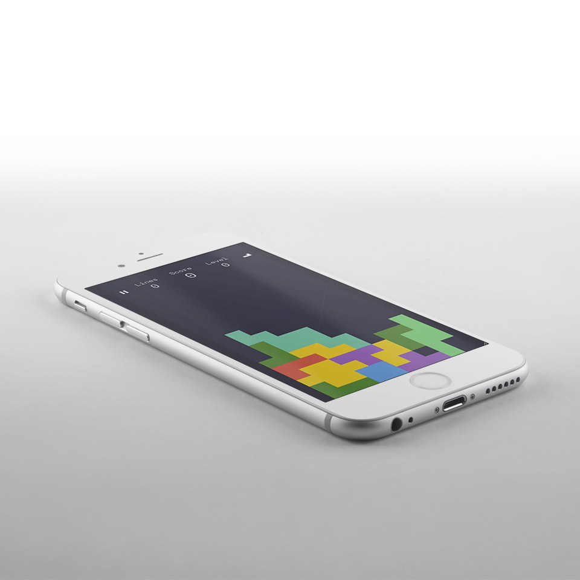

TET
RIS
RIS
Designed for mobile use but plays equally as good or even better with desktop. Add it to your homescreen and you can play it offline too.
Challenge was to design best possible method for game controls. I ended up dividing the whole screen into four sections in 45 degrees angle. This allows the player to concentrate fully on the game since there is no need to find dedicated buttons from the screen while playing.

LAUNCH